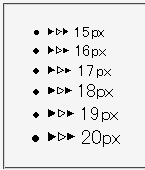

Unicodeを使用しないと表現できない文字などを実体参照で表記するとき、その文字のデータを含むフォントが存在する環境でも文字が表示されない場合がある。
<ul> <li style="font-family:'Lucida Sans Unicode',sans-serif;">Lucida 絓</li> <li style="font-family:'Arial',sans-serif;">Arial 絓</li> <li style="font-family:'Tahoma',sans-serif;">Tahoma 絓</li> <li style="font-family:'Times New Roman',sans-serif;">Times 絓</li> </ul>
font-familyプロパティで指定した欧文フォントには漢字が含まれていないので、sans-serifフォント（例えば「ＭＳ ゴシック」）で漢字が表示されるはずです。Win98以降に含まれる「ＭＳ ゴシック」は絓で表される文字（糸偏の右に「圭」）のデータを持っているので、該当する文字が表示されるはずです。
WinIE6.0（WindowsXP）
WinIE6.0（WindowsMe）
Win98以降に含まれている「ＭＳ （Ｐ）ゴシック」や「ＭＳ （Ｐ）明朝」は、補助漢字（JIS X0212）で定義されている文字のデータを含んでいます。従って、フォントを追加していない状態でもこれらの文字（絓で表される文字もJIS X0212で定義されています）は表示できるはずです。
font-familyの指定に依存しない不具合である可能性があります。以下の例ではfont-familyの指定はありませんが、特定のサイズでのみ実体参照した文字が化ける場合があるそうです。
<ul> <li style="font-size:15px">▶▷► 15px</li> <li style="font-size:16px">▶▷► 16px</li> <li style="font-size:17px">▶▷► 17px</li> <li style="font-size:18px">▶▷► 18px</li> <li style="font-size:19px">▶▷► 19px</li> <li style="font-size:20px">▶▷► 20px</li> </ul>
Netscape7.1